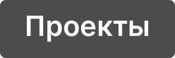
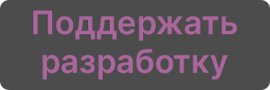

Вы на главной странице сайта ZzEdovec
Проекты ZzEdoveс
Связаться
Устаревшие страницы

Поддержите разработку проектов

*Проекты, кнопки которых обведены еле заметной бежевой рамкой можно скачать на компьютеры под управлением ОС Windows